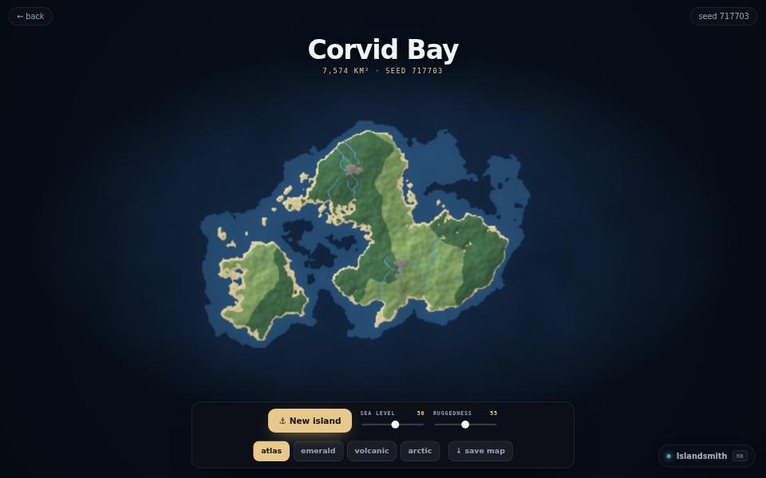

instrument · about 3 min · The Workshop Shallows
Islandsmith
Press the button, get a brand new world: coastline, mountains, forests, rivers and a name.

The problem
A whole world, coastline to name, from one random number.
What it does
- A new island, its rivers and its name from one seed
- Gradient-noise terrain with ridged mountains
- Rivers that walk downhill to the sea
The most interesting decision
Water walks downhill
Rivers are made by dropping water on the highest points and letting it walk downhill to the sea, so they always make geographic sense.
Built with
- Noise terrain
- Rivers + biomes
- Name generator
- Canvas 2D
Evidence
Press the button and a brand new world comes out of a single seed.
Its world
An island drawing a map of an island, which is drawing a map of an island.